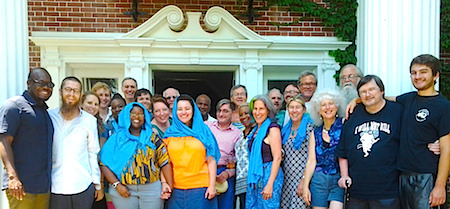

Friends,
As we reflect on this momentous year winding to a close -- and gear up for the exciting work and festivities that 2015 promises as we mark 100 years of persevering for peace -- we, the staff and national council of FOR-USA, strengthen our resolve with gratitude and affirmations.
I affirm:
I am because you are.
As we head into this season of giving and light, I ask you to make a donation to FOR today.
Your gift is extremely important as it provides resources that make an immediate impact that will help us through these critical times.
I am hopeful
Throughout my recent visit to Ferguson, I heard the refrain, "Thank you for being here. Thank you for your leadership. Thank you for your solidarity," as many shared their appreciation for FOR's presence.
While there, I met with leaders from the United Church of Christ, the African Methodist Episcopal Church, the Jewish Reform tradition, the Muslim Ummah in St. Louis, and other ecumenical, interfaith, and grassroots groups. There was widespread evidence that FOR's ability to be a bridge, to bring experience and knowledge of other struggles and movements, to honor local leadership and assist local groups in striving for a comprehensive vision for change makes our role essential and unique.
As members and friends of FOR, you provide hope through your support of the national coordination of nonviolent justice and peace work.
Our vision of reconciliation makes me hopeful.
Your gift of $25, $50, $100, or $500 can make all the difference to activists on the ground, to staff across the country supporting grassroots efforts, to dreamers and workers who have the same vision of reconciliation that you do.
Make a tax-deductible donation to FOR now.
I am determined
"The first priority shall be the preservation of human life" was the first proposed guideline presented to activists and law enforcement at a November press conference at which FOR stood as part of the Don't Shoot Coalition. The preservation of life through the transformative power of nonviolence is FOR's mission, and it is why we are in Ferguson.
Black lives are lost at the hands of law enforcement at a rate roughly four times higher than white lives. The phrase "Black Lives Matter!" reminds us that this struggle is about life and the inalienable right to enjoy the good gift of life. When movement is restricted, when systems allow one group to exploit another, when persons cannot expect justice and fairness in their own communities, lives are lost both figuratively and literally.
Our work on the ground to prevent and de-escalate violence is ultimately about saving lives.
We refuse to allow the legacies of racism, war, and violence manifest in St. Louis to be our future. Our nation is beginning to see that the underlying issues erupting into demand for change in Ferguson are issues present in all of our communities.
After 12 long years of relentless U.S. warfare abroad, the trappings of war have filtered into local communities. Mine Resistant Ambush Protected (MRAP) vehicles have become a part of many local police forces. But activists in St. Louis are bringing us back to our senses.
"Tanks rolling into Ferguson," tweeted one young woman. "This isn't normal!"
We reject the normalization of war.
I know that you are as determined as I am to take back our communities.
Make your year-end donation to FOR today, and you can specify your gift to a particular FOR effort -- to nonviolence trainings, to work in Ferguson, to supporting grassroots groups, to the continued publication of Fellowship magazine -- wherever you choose. Donate to FOR and choose an FOR program to benefit.
I am grateful

Your assistance in grassroots efforts that have far reaching impact, the decades of experience and knowledge related to nonviolent struggle that you carry, your efforts to support the coordination and organization of movements, and your faith and perseverance in our shared work fills me with gratitude. You are FOR, and I am so grateful for you.
Your donation will make a world of difference. I promise you.
I am because you are.
Thank you for being with me in this struggle. And in the coming weeks, you'll hear more affirmations from FOR members who are working for a better world. Together we can create a new tomorrow.
Wishing you and your family a blessed holiday season.
In Grace and Peace,
 Rev. Kristin Stoneking Rev. Kristin Stoneking
Executive Director
Fellowship of Reconciliation
Images: FOR Freeman Fellow Rev. Osagyefo Sekou leads the #FergusonOctober clergy march (photo copyright Heather Wilson, used with permission); FOR staff and national council gather at FOR's Shadowcliff headquarters in Nyack, NY, earlier this year. |